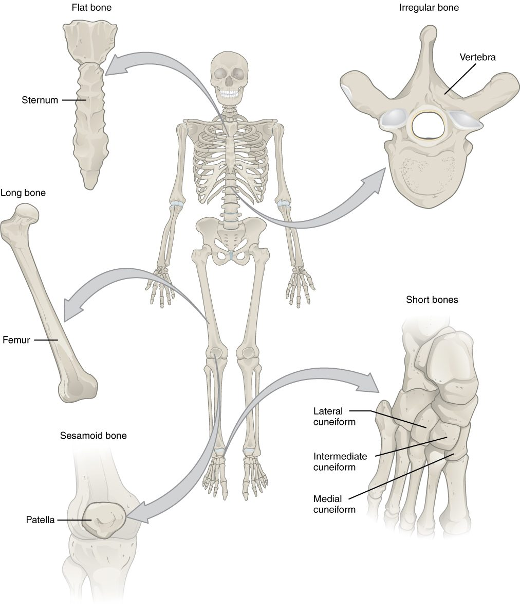
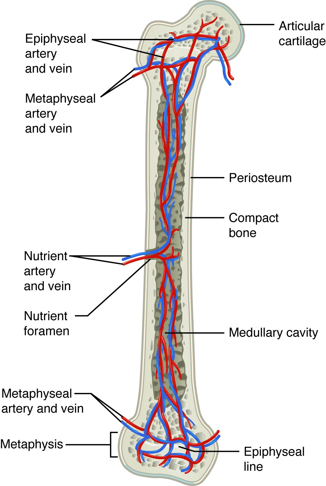

A long bone such as your thigh bone is not a solid rod. It is a living organ with a hollow shaft, two widened ends, a fat-filled or blood-forming core, a tough outer sheath, and its own arteries and nerves. This page walks through long bone anatomy the way a labeled diagram does, part by part, after first asking what your skeleton actually does. It then covers how bones are sorted by shape, what red and yellow bone marrow are, the membranes that wrap bone inside and out, and the named bumps, ridges and pits on a bone's surface, called bone markings.
What your skeleton does
Stand up and your skeleton holds you up. Get hit in the chest and your ribs take the blow before your heart does. Those are the obvious jobs. The full list of the functions of the skeletal system has six items:
- Support. Bones are the rigid frame that holds your body's shape and carries its weight. Soft organs hang from it or rest on it.
- Protection. Bone encloses the organs that can least afford injury: the skull around your brain, the vertebrae around your spinal cord, and the rib cage around your heart and lungs.
- Movement. Muscles attach to bones through tendons. When a muscle shortens, it pulls on a bone, and the bone swings at a joint. Bones are the rigid bars; muscles supply the pull.
- Mineral storage. About 99% of the calcium in your body, and about 85% of its phosphate, is locked in bone. Bone gives up these minerals to the blood and takes them back, so it works as your body's mineral bank. You will see how that bank is run at the end of this chapter.
- Blood cell formation. Red marrow inside certain bones makes your blood cells (next section).
- Fat storage. Yellow marrow stores triglycerides, a reserve of energy.
Blood cell formation (hematopoiesis)
Every second, your body makes about two million new red blood cells to replace old ones. They are made inside your bones. Hematopoiesis (hemato- = blood, -poiesis = making), also called hemopoiesis, is blood cell formation. In an adult it happens in red bone marrow.
The process starts with stem cells, which you met in Cell division and differentiation. Stem cells in the red marrow divide. Some of their daughters stay stem cells; others differentiate, step by step, into red blood cells, white blood cells and platelets. The finished cells squeeze through the walls of thin-walled vessels in the marrow and enter the blood.
This is the short version. The blood cell lines, the stem cells that start them and the signals that control them are taught in full in Blood composition and functions.
Classifying bones by shape
Your skeleton has about 206 bones, and anatomists sort them into five groups by shape, not by size (Figure 1). This classification of bones by shape tells you something about how each bone is built.

- Long bones are longer than they are wide, with a shaft and two ends. They are the bones of your limbs: the thigh bone, the bones of the upper arm, forearm and lower leg, and even the small bones of your fingers and toes. A finger bone is tiny, but it is a long bone because of its shape.
- Short bones are about as wide as they are long, roughly cube-shaped. The bones of your wrist and ankle are short bones. Many of them packed together give stability with small gliding movements.
- Flat bones are thin and often curved, with two broad surfaces. The breastbone, the ribs, the shoulder blades and the bones of the roof of your skull are flat bones. They protect what lies beneath and give muscles broad surfaces to attach to.
- Irregular bones have complex shapes that fit none of the other groups. The vertebrae and many bones of the face are irregular.
- Sesamoid bones (sesam- = sesame seed, -oid = like) are small, round bones that form inside a tendon where it passes over a joint. The bone at the front of your knee is the largest one. A sesamoid bone keeps the tendon off the joint surface and changes the angle of its pull. Their number varies from person to person, which is one reason the total bone count is "about" 206.
Parts of a long bone
Look at the long bone in Figure 2 from top to bottom. It has three regions, a central cavity, and a cap of cartilage on each end. Learn these parts of a long bone by their word roots and they are hard to forget:
![A long thigh bone seen from the front, with its upper half cut open lengthwise. Brackets down the left side mark the upper end, a flared zone, the long shaft, another flared zone and the lower end. Inside the upper end, a red lattice of bone holds red marrow, crossed by a thin pale line. The shaft is a hollow tube of solid bone whose cavity holds a plug of yellow marrow, lined inside by a thin layer and wrapped outside by a thin membrane that is peeled back. A red artery enters the middle of the shaft, and pale blue cartilage caps both ends.](../figures/os-6-7.jpg)
- Diaphysis (dia- = through, -physis = growth): the shaft, the long middle part. Its wall is a thick tube of dense bone, which is what makes the shaft strong for its weight: a hollow tube resists bending almost as well as a solid rod of the same width.
- Medullary cavity (medulla = marrow, inner part): the hollow inside the diaphysis. In an adult it is filled with yellow marrow.
- Epiphysis (epi- = upon; plural epiphyses): each widened end of the bone. The end nearer the trunk is the proximal epiphysis, and the end farther away is the distal epiphysis. An epiphysis is a thin shell of dense bone filled with a lattice of bony struts, and the spaces in the lattice hold red marrow. The wide end spreads the load at the joint.
- Metaphysis (meta- = between): the flared region where the diaphysis widens into each epiphysis. In a child, a disc of cartilage sits here, and that is where the bone grows longer; you will meet it in Bone formation and growth. In an adult, a thin line of bone marks where the disc used to be.
- Articular cartilage: the layer of hyaline cartilage covering each epiphysis where it meets another bone at a joint. You met it with cartilage. It has no blood vessels and no perichondrium, and its smooth surface cuts friction.
The two kinds of bone tissue, the dense bone of the shaft wall and the lattice of struts in the ends, have names and a microscopic structure of their own. They are the subject of the next topic.
Red and yellow bone marrow
Bone marrow is the soft tissue that fills the spaces inside bones. It comes in two kinds:
- Red bone marrow is the blood-forming tissue: a mesh of reticular tissue packed with stem cells, developing blood cells and wide, thin-walled vessels. It is red because of the red blood cells it is making.
- Yellow bone marrow is mostly adipose tissue. Its fat cells give it its color. It makes no blood cells under normal conditions.
| Red bone marrow | Yellow bone marrow | |
|---|---|---|
| Main tissue | Reticular tissue with stem cells and developing blood cells | Adipose tissue (fat cells) |
| Job | Hematopoiesis: makes red blood cells, white blood cells and platelets | Stores triglycerides as an energy reserve |
| Where in a newborn | Almost every bone | Very little |
| Where in an adult | The breastbone, ribs, skull bones, vertebrae and hip bones, and the proximal epiphyses of the thigh and upper arm bones | The medullary cavities of long bones |
| Can it change? | Slowly replaced by yellow marrow through childhood | Can turn back into red marrow when blood loss or disease demands more blood cells |
At birth, nearly all your marrow is red. Through childhood, fat cells gradually fill the marrow of the limb bones, starting in the shafts, until by early adulthood red marrow remains mainly in the flat bones, the vertebrae and the upper ends of the two long bones nearest the trunk. That shift is why a doctor who needs to sample an adult's red marrow usually takes it from the back of the hip bone, not from the middle of a limb.
Yellow marrow keeps some of its old ability. After heavy bleeding over weeks, or when disease destroys blood cells faster than normal, stem cells repopulate yellow marrow and it turns red again.
Periosteum and endosteum
Bone is wrapped on the outside and lined on the inside by thin membranes (Figure 3).

The periosteum (peri- = around, oste- = bone) covers the outer surface of a bone everywhere except where articular cartilage covers it. It has two layers:
- An outer fibrous layer of dense irregular connective tissue. Tendons and ligaments blend into it, so a muscle's pull passes into the bone through its collagen. Bundles of collagen fibers also run from it deep into the bone, anchoring it.
- An inner cellular layer holding stem cells and cells that lay down new bone. This layer is how a bone gets thicker and how a broken bone begins to repair itself from the outside.
The periosteum is full of blood vessels and sensory nerve endings. That is why a kick to the shin, where bone lies just under the skin, hurts so much: the blow compresses the periosteum's nerve endings against the bone.
The endosteum (endo- = within) is a thin layer of flat cells lining every inner surface of bone: the medullary cavity, the struts of the lattice in the ends, and the small canals that run through the bone. Like the cellular layer of the periosteum, it holds cells that can build bone and cells that break it down, so a bone can be reshaped from the inside.
| Periosteum | Endosteum | |
|---|---|---|
| Where | Outer surface of the bone, except the joint surfaces | All inner surfaces: medullary cavity, lattice struts, canals |
| Layers | Two: outer fibrous, inner cellular | One thin cellular layer |
| Anchors tendons and ligaments? | Yes, through its fibrous layer | No |
| Bone-building cells? | Yes, in its inner layer | Yes |
| Nerves and vessels | Many; very sensitive to pain | Fewer |
| Main role in growth and repair | Adds bone to the outside: thickening and outer repair | Reshapes bone from inside, including the medullary cavity |
Blood and nerve supply
Bone is living tissue with a high demand for blood, and a broken thigh bone can bleed a liter or more into the thigh. Figure 4 shows where the vessels come in.

- The nutrient artery is the main artery of a long bone. It enters the diaphysis through a nutrient foramen (from the Latin for an opening), a small hole that runs slantwise through the shaft wall. Inside, it branches toward both ends and supplies the marrow and the inner part of the shaft wall. A nutrient vein leaves by the same hole.
- Smaller arteries enter the metaphyses and epiphyses directly.
- Vessels of the periosteum supply the outer part of the shaft wall.
Nerves travel into the bone alongside the vessels. They are thickest in the periosteum, which is why a broken bone is so painful.
Bone markings
Run your fingers along your elbow and you feel two bony knobs on either side. Feel the top of your hip bone and you feel a long curved ridge. These surface features are bone markings. Each has a name that tells you its shape, and the shape follows what happens there: a tendon or ligament pulling, a joint surface bearing weight, or a vessel or nerve passing through (Figure 5).
![Three groups of drawings of bone surface features. Left: a thigh bone and an upper arm bone seen from the front, with labels on a rounded head and the small pit on it, small bumps, a groove, a long rough raised area on the shaft, a shallow hollow and rounded knobs at the lower ends, and a smooth joint surface. Top right: the hip bones from the front, with a curved ridge along the top edge and a broad hollow below it. Bottom right: a skull from the front, with green air spaces around the nose, a small hole above the eye socket, a channel and a crack in the eye socket, and a bump on the chin.](../figures/os-6-10.jpg)
The general word for any bony projection is a process. Projections fall into two groups, and depressions and passages make a third.
Projections where tendons and ligaments attach
Where a muscle pulls hard and often, the bone under its tendon grows a raised area. So these markings are larger in people who have trained heavily for years.
| Marking | What it is | Example |
|---|---|---|
| Tuberosity (tuber = swelling) | A large, rough, raised area | The rough area partway down the upper arm bone where the shoulder muscle attaches |
| Tubercle (-cle = small) | A small, rounded bump | The two bumps at the upper end of the upper arm bone |
| Trochanter (Greek, a runner) | A very large, blunt process; found only on the thigh bone | The big knob you can feel at the side of your upper thigh |
| Crest | A long, prominent ridge | The curved top edge of the hip bone |
| Spine | A sharp, slender, pointed process | The points you feel down the middle of your back, one on each vertebra |
| Epicondyle (epi- = upon) | A bump on or above a condyle | The knobs on either side of your elbow |
Projections that form joints
| Marking | What it is | Example |
|---|---|---|
| Head | A rounded end set on a narrower neck | The ball at the top of the thigh bone that fits the hip socket |
| Condyle (Greek, knuckle) | A rounded knob that meets another bone | The two knobs at the lower end of the thigh bone that form the knee |
| Facet (French, little face) | A small, flat, smooth joint surface | The small joint surfaces where each vertebra meets the next |
Depressions and passages
- A fossa (Latin, ditch; plural fossae) is a shallow basin or depression. It may hold part of another bone when a joint moves, or give a muscle a broad surface. The back of your elbow has a fossa that receives the point of the elbow when you straighten your arm.
- A meatus (Latin, passage) is a tube-like canal through bone. Your ear canal runs into your skull through one.
Holes through bone for vessels and nerves, like the nutrient foramen above, are named one by one when you study the skull.
Two rules make markings easier to learn. First, a marking's name describes its shape, so once you know that a tuberosity is a rough swelling, you can picture any tuberosity. Second, the shape follows the job: rough projections for pulling tendons and ligaments, smooth rounded ones for joints, and holes and channels for what passes through.
Putting it together
Take one long bone and trace it from outside in. Periosteum wraps it, anchoring tendons and carrying nerves and vessels. Under it lies the dense wall of the diaphysis, pierced near its middle by a nutrient foramen. Inside the wall is the medullary cavity, lined by endosteum and filled with yellow marrow. At each end, the diaphysis flares through a metaphysis into an epiphysis full of red marrow, capped by articular cartilage. The next topic zooms in on the bone tissue itself: the cells that build and break it and the tiny cylinders it is made of.